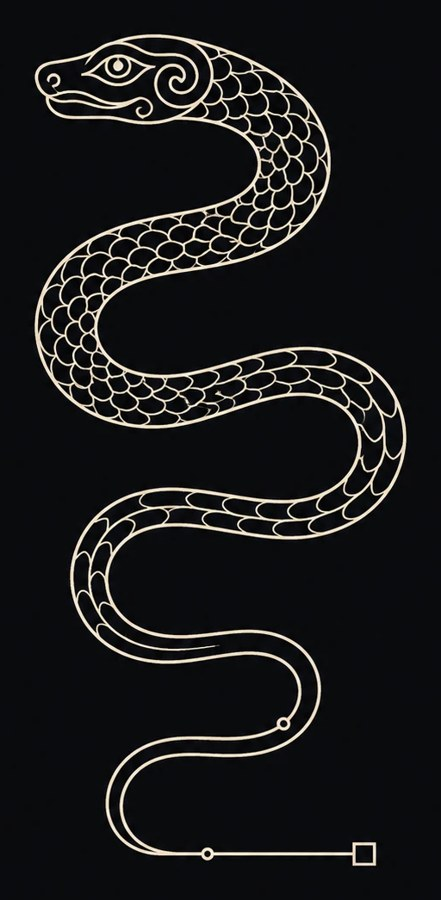

Welcome to
Ancient Access
Ancient Access is a small workshop for LLM roleplay: character cards, a preset that simulates a psyche, and tools that keep long stories coherent. Everything here is built around one idea — each character delivers a single, specific experience, engineered end to end.
The characters range from mythic period pieces grounded in real historical research to modern psychological dramas. Underneath them all runs the same engine: emotional realism, literary prose, and systems that hold together across hundreds of messages.
Setup guide